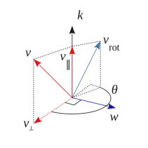
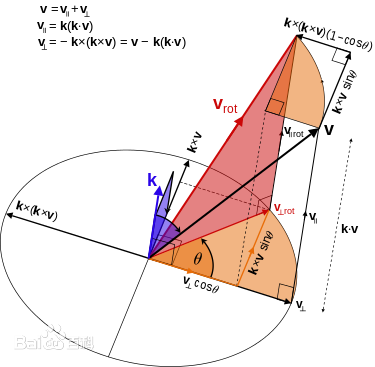

公式描述
Rodrigues旋转公式（罗德里格旋转公式）是计算三维空间中，一个向量绕旋转轴旋转给定角度以后得到的新向量的计算公式，在图像处理程序中，可以用于求两个向量间的旋转矩阵。
如下图所示，对于向量\(v\)，如果要绕向量\(k\)（单位向量）表示的轴旋转\(\theta\)角度得到向量\(v_{rot}\)，那么\(v_{rot}\)可以被表示为如下，这里的\(\times\)表示叉乘。 \[ v_{rot} = \cos\theta \cdot v + (1 - \cos\theta)(v^Tk)k + \sin\theta \cdot k \times v \]

推导过程
首先将\(v\)分解为平行于\(k\)的\(v_{||}\)以及垂直于\(k\)的\(v_\perp\)，那么有：
\[ |k| = 1\\ v_{||} =|v|\cos<v,k> k= |v||k|\cos<v,k> k = (v^Tk)k\\ v_\perp = v - v_{||} = v - (v^Tk)k \]
首先借助于\(v_{||}\)，\(v_{rot}\)可以被表示为如下，这里的\(v_{\perp rot}\)表示\(v_\perp\)绕\(k\)旋转\(\theta\)角度得到的一个向量，如下图所示。（\(k \times v\)是一个垂直于\(k,v_\perp\)平面且长度和\(v_\perp\)相等的向量） \[ v_{rot} = v_{||} + v_{_\perp rot}\\ v_{_\perp rot} = \cos\theta \cdot v_\perp + \sin\theta \cdot k \times v \]

因此综合以上推导，得到Rodrigues旋转公式： \[ \begin{aligned} v_{rot} &= v_{||} + v_{_\perp rot}\\ &=v_{||} + \cos\theta \cdot v_\perp + \sin\theta \cdot k \times v\\ &=(v^Tk)k + \cos\theta \cdot v_\perp + \sin\theta \cdot k \times v\\ &=(v^Tk)k + \cos\theta \cdot (v - (v^Tk)k) + \sin\theta \cdot k \times v\\ &=\cos\theta \cdot v + (1 - \cos\theta) \cdot (v^Tk)k + \sin\theta \cdot k \times v \end{aligned} \]
Rodrigues旋转公式的矩阵形式
如果令: \[ k = \begin{bmatrix} k_x\\k_y\\k_z \end{bmatrix}, v = \begin{bmatrix} v_x\\v_y\\v_z \end{bmatrix} \] 那么可以用一个矩阵\(R\)来表示从\(v\)到\(v_{rot}\)的旋转过程，这里\(E\)表示单位矩阵。 \[ v_{rot} = Rv\\ R = \cos\theta \cdot E + (1 - \cos\theta) \begin{bmatrix} k_x\\k_y\\k_z \end{bmatrix} \begin{bmatrix} k_x&k_y&k_z \end{bmatrix} + \sin\theta\cdot\begin{bmatrix} 0&-k_z&k_y\\ k_z&0&-k_x\\ -k_y&k_x&0 \end{bmatrix} \]
Rodrigues旋转公式矩阵形式的特例
绕某个坐标轴旋转
我们常见的一些旋转操作，例如绕\(Z\)轴旋转，那么在Rodrigues旋转公式中，\(k = \begin{bmatrix}0\\0\\1\end{bmatrix}\)，那么旋转矩阵变为： \[ \begin{aligned} R &= \cos\theta \cdot E + (1 - \cos\theta) \begin{bmatrix} k_x\\k_y\\k_z \end{bmatrix} \begin{bmatrix} k_x&k_y&k_z \end{bmatrix} + \sin\theta\cdot\begin{bmatrix} 0&-k_z&k_y\\ k_z&0&-k_x\\ -k_y&k_x&0 \end{bmatrix}\\ &=\begin{bmatrix} \cos\theta&0&0\\ 0&\cos\theta&0\\ 0&0&\cos\theta \end{bmatrix} + \begin{bmatrix} 0&0&0\\ 0&0&0\\ 0&0&1-\cos\theta \end{bmatrix} + \begin{bmatrix} 0&-\sin\theta&0\\ \sin\theta&0&0\\ 0&0&0 \end{bmatrix}\\ &= \begin{bmatrix} \cos\theta&-\sin\theta&0\\ \sin\theta&\cos\theta&0\\ 0&0&1 \end{bmatrix} \end{aligned} \] 这个其实就是我们常见的绕\(Z\)轴旋转的变换矩阵了。
\(k\)垂直于\(v\)的情况
在上面的推导过程中，如果\(k\)垂直于\(v\)，那么： \[ v_{||} = \mathbb{0}\\ v_\perp = v \] 则有： \[ \begin{aligned} v_{rot} &= v_{||} + v_{_\perp rot}\\ &= v_{_\perp rot}\\ &= \cos\theta \cdot v_\perp + \sin\theta \cdot k \times v\\ &= \cos\theta \cdot v + \sin\theta \cdot k \times v \end{aligned} \] 写成矩阵形式： \[ \begin{aligned} v_{rot} &= Rv\\ R &= \cos\theta \cdot E + \sin\theta\cdot\begin{bmatrix} 0&-k_z&k_y\\ k_z&0&-k_x\\ -k_y&k_x&0 \end{bmatrix} \end{aligned} \]
Rodrigues旋转公式在图像处理中的应用：求旋转矩阵
问题定义：已知向量\(v\)通过一定的旋转可以到达\(p\)（因为只有旋转操作，因此两个向量的模长肯定是相等的），现在要获取从\(v\)变换到\(p\)的旋转矩阵。
两个向量的旋转其实可以看做在一个平面上的二维旋转（或者说绕该平面法向量的旋转）,这个平面就是由\(v\)和\(p\)共同决定的平面\(m\)，这里旋转角度很好求： \[ \theta = \arccos(\frac{v^Tp}{|v||p|}) \] 平面\(m\)可以用其法向量来表示，由叉乘的定义，\(v \times p\)所得到的向量\(\hat{k}\)垂直于平面\(m\): \[ \hat{k} = v \times p = \begin{bmatrix} v_yp_z - v_zb_y\\v_zp_x - v_xb_z\\v_xp_y - v_yp_x \end{bmatrix}\\ v = \begin{bmatrix} v_x\\v_y\\v_z \end{bmatrix}, p=\begin{bmatrix} p_x\\p_y\\p_z \end{bmatrix} \] 为计算方便，可以将\(\hat{k}\)长度归一化，使其成为单位向量\(k\)，那么按照Rodrigues旋转公式\(k\)垂直于\(v\)的特例情况，其矩阵表示如下，因此只要求出\(\theta\)与\(k\)，即可计算其旋转矩阵。 \[ \begin{aligned} p &= Rv\\ R &= \cos\theta \cdot E + \sin\theta\cdot\begin{bmatrix} 0&-k_z&k_y\\ k_z&0&-k_x\\ -k_y&k_x&0 \end{bmatrix} \end{aligned} \]